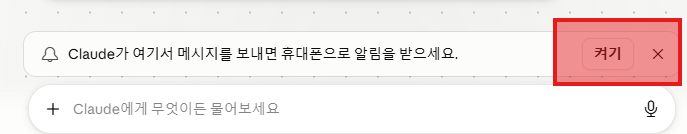

TIER 5 · Dispatch
회의 중에도 — 폰으로 시킨다
📁
이번 단계 폴더 →
실습자료/05-디스패치/
책상 앞에 앉아 있지 않아도 됩니다. 폰에서 한 마디 보내면 — 데스크톱의 Cowork이 일하고, 결과를 폰으로 알려줍니다.
1번 페어링
∞회의·이동 중 지시
0데스크톱 앞에 앉기
내 화면에 Dispatch가 안 보이면?
플랜에 따라 아직 안 열려 있을 수 있어요 — 정상입니다. 그럴 땐 강사 시연을 같이 보고, 그 시간에 T6(시나리오)를 먼저 진행하거나 T3 도전 과제를 이어 가면 됩니다.
WHY · 이게 왜 다른가
자리에 없어도 — 일은 굴러간다
회의 많은 직장인의 하루
회의 → 보고 → 외부 일정 → 다시 회의. 책상에 앉을 시간이 거의 없습니다. 그 시간 동안에도 보고서·자료가 누군가의 손에서 만들어지고 있어야 합니다.
Dispatch — 폰이 곧 지시봉
차 안에서 한 마디 → 사무실 책상의 Cowork이 처리 → 도착할 때쯤 결과가 폰으로 옵니다. "왔더니 책상에 자료가 와 있더라"의 경험.
STEP 1 · 페어링
폰을 — 한 번만 연결
준비물 — 시작 전 확인
- 휴대폰에 Claude 앱 설치 완료 (App Store / Play Store)
- 데스크톱과 같은 계정으로 폰 로그인
- 앱이 둘 다 안 되면 — 옆 사람과 짝지어 보거나 강사에게 말씀해 주세요
1
데스크톱 Cowork → 사이드바 Dispatch.
2
Get started 누르고 안내에 따라 켜기 (같은 계정이면 자동 연결).
3
"안녕" 한 줄을 폰에서 보내 응답 확인.

STEP 2 · 첫 지시
폰에서 — 한 마디 보내기
① 가벼운 확인
안녕. 지금 작업 폴더에 어떤 파일이 있는지 한 줄로 알려 줘.
② 짧은 메모 시키기
05-디스패치 폴더에 "이동메모.md" 만들어 줘. 첫 줄에 지금 시간, 둘째 줄에 "이동 중 — 이따 다시" 적어 둬.
STEP 3 · 회의 시뮬레이션
5분 동안 — 세 가지 지시
① 회의 직전
곧 회의야. 06-시나리오/자료/회의안건.txt 보고 3분 안에 안건 한 페이지 요약을 05-디스패치 폴더에 만들어 둬.
② 회의 후
방금 회의 결정사항 정리해 줄게: [짧게 받아쓰기] 이걸로 상사에게 보여줄 보고서 초안 만들어 둬. 30분 후에 확인할게.
결과 파일들은 05-디스패치 폴더에 모입니다 — 책상에 돌아와서 한꺼번에 확인.
PLUS · 더 멀리
한 마디로 — 여러 단계
① 멀티스텝
03-자동화/자료 폴더를 읽고 → 핵심 요약하고 → 보고용 한 장으로. 세 단계 끝낼 때마다 폰으로 알려 줘.
② 폰에서 팀 호출
T4에서 기억시킨 리서치 팀 워크플로를 돌려서 "[관심 주제]" 검증된 보고서로. 끝나면 폰으로 한 줄 요약 + PDF 위치만 알려 줘.
CHALLENGE · 먼저 끝났다면
한 발 더 — 도전 과제
도전 과제
- ① 페어링 완성 — 폰 ↔ 데스크톱 연결 후 한 줄 응답 확인. (
도전과제/01-페어링.md) - ② 5분 회의 시뮬레이션 — 회의 전·중·후 3건 폰으로 처리. (
02-회의시뮬레이션.md) - ③ 멀티스텝 한 마디 — 한 메시지에 3단계 담아 처리. (
03-멀티스텝.md) - ④ 폰에서 팀 호출 — 서브에이전트 여러 명 동시 가동. (
04-서브에이전트.md) - ⑤ 출근길 예약 — 매일·매주 자동 실행 예약. (
05-스케줄지시.md)
결과물이 만족스러우면 — /채점. 다음 단계는 직장인이 자주 마주칠 6가지 일감 투어입니다.